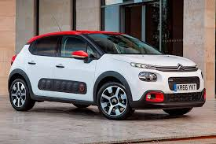

Citroën es el único constructor de automóviles que ha ganado tres campeonatos oficiales diferentes de la Federación Internacional del Automóvil: en Rally raid; en el Campeonato Mundial de Rally "WRC"; y en el Campeonato Mundial de Turismos "WTCC". Citroën es también el fabricante de automóviles que ha ganado más títulos de campeón del mundo: 15 títulos de campeón del mundo en 15 participaciones. Citroën obtuvo 5 veces el Campeonato Mundial de Rally Raid; 8 veces el Campeonato Mundial de Rally "WRC"; y 2 veces el Campeonato Mundial de Turismos "WTCC".
Los inicios de la historia de esta marca automovilística están igualmente marcados por las expediciones organizadas por André Citroën a través del desierto del Sahara, de África y de Asia. Estas expediciones dirigidas por Georges-Marie Haardt y Louis Audouin-Dubreuil, utilizaban vehículos Citroën para demostrar la robustez de la marca. En estas expediciones también viajaban científicos y periodistas que grababan películas y realizaban experimentos científicos.
Citroën destacó notoriamente en el plano publicitario llegando hasta vender miniaturas de sus coches a los niños. Pretendía que los niños al comenzar a hablar, dijeran sus primeras palabras: ¡Mamá!, ¡Papá!, ¡Citroën!. Consiguió también que un anuncio luminoso suyo fuera instalado en la torre Eiffel.
El logotipo de Citroën consiste en dos galones o espiguillas invertidas superpuestas (chevrones) y se inspiran en un invento de André, referente a un engranaje con los dientes en forma de V, que fueron montados en modelos de altas prestaciones de Citroën, y que aventaja en prestaciones a los engranajes de diente plano.